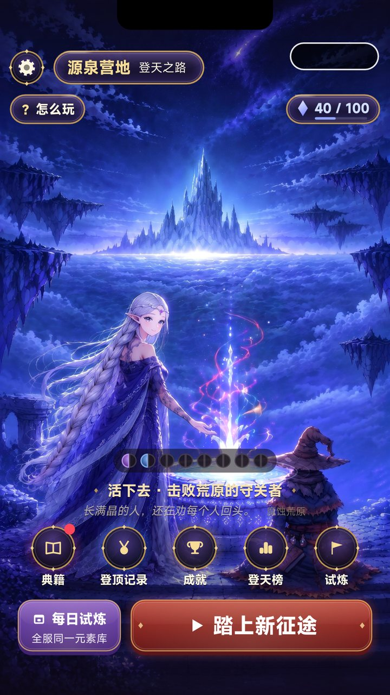
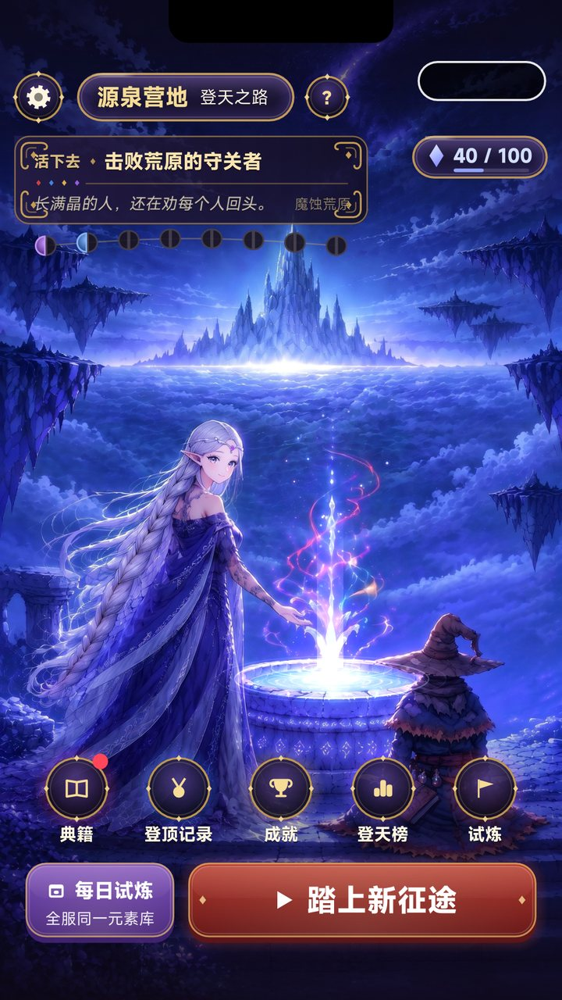
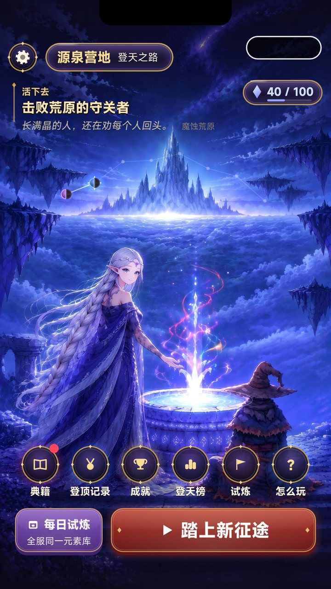
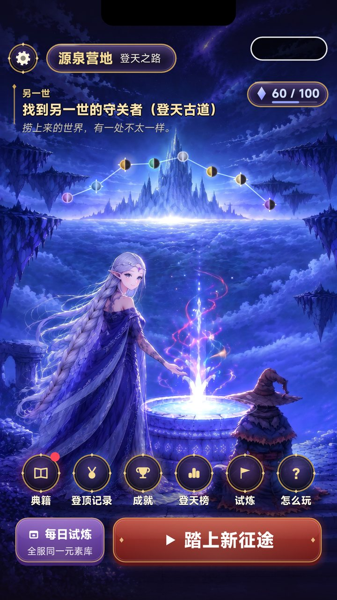
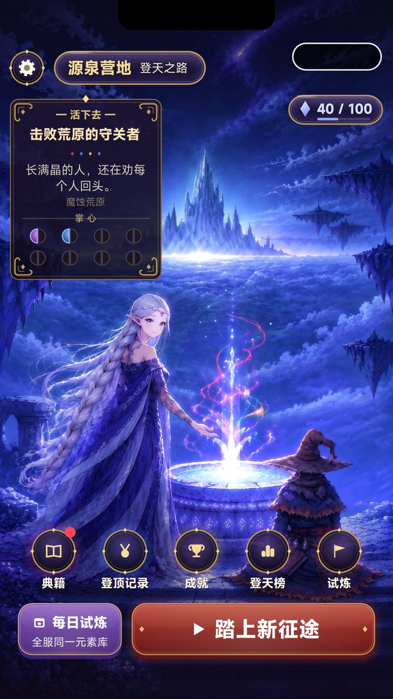
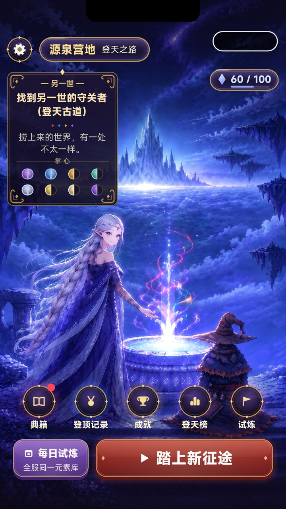

源泉营地 · 布局三方案（实机截图，11-08）
用户：「营地下方的目标能否放在左上角，把怎么玩换个位置，掌心印记当前的位置也不好……出 3 个方案」。三套都已在游戏里实现，用 -dv-camp=A|B|C 切换，默认仍是现状，选定后再改默认。
每列上图是前期（到过第 3 关、2 枚印记），下图是后期（全通、本世 8 枚 + 另一世 3 面）。都开了刘海 / TapTap 胶囊模拟，右上胶囊下不放东西；「踏上新征途」与底部菜单不动。点目标任一行，薇丝塔说出 tell；点印记打开典籍掌心页。
现状（默认）
目标与印记在底部菜单上方，「? 怎么玩」在左上。用户觉得位置不好，作对照。

前期后期方案 A ·「卷首」
左上一条金角符文卷首：上行「幕 · 目标」，四元素菱形分隔，下行薇丝塔的碎片句与地名；八枚印记挂在卷首下方一道细弧上（点开掌心）。「怎么玩」缩成标题牌旁的一枚「?」符文徽章。信息最集中，一眼读完。

前期后期方案 B ·「星图」
左上不加底板，只用金色细竖线 + 字：幕名小字、目标大字、碎片句斜体。八枚印记化成王城尖塔上空的一道星座，点亮的印记闪烁、相邻都亮时连线；未得的只是暗星。「怎么玩」进底部菜单第六枚徽章。最融进画面、最安静。

前期
后期方案 C ·「典册」
左缘一张竖版金框卡片（顶上一颗宝石）：幕名、目标、碎片句居中排，下面「掌心」两行各四枚印记。「怎么玩」收进设置弹窗（那里本来就有）。像翻开的一页典籍，进度最直观，但占的天空最多。

前期
后期